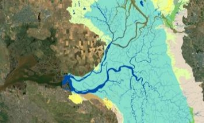

|  |
The American Society of Civil Engineers has accepted two Vicelab papers for publication in the Journal of Water Resources Planning and Management. The first is a technical paper, Climate-adaptive Water Year Typing for Instream Flow Requirements in California's Sierra Nevada, authored by David E. Rheinheimer, Sarah Null, and Joshua Viers. The second is a case study, Simulation Modeling to Secure Environmental Flows in a Diversion Modified Flow Regime, authored by Jenny Ta, Rodd Kelsey, Jeanette Howard, Jay Lund, Samuel Sandoval-Solis and Joshua Viers. The papers are currently in the editing process and will be published at a later date. |
|---|